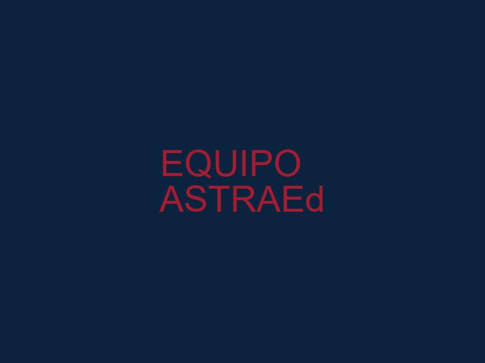

Consultoría y Capacitación Estratégica
Construyendo un legado de innovación y progreso
Desarrollo Empresarial • Formación Especializada • Consultoría Estratégica
Bienvenido a ASTRAEd
Fortaleciendo el talento humano
En ASTRAEd nos especializamos en brindar capacitación y consultoría estratégica con un enfoque moderno y transformador. Desde 2016 trabajamos junto a instituciones públicas y privadas, ofreciendo soluciones en educación, desarrollo empresarial y formación especializada.
Nuestra esencia está en fortalecer el talento humano y acompañar a las organizaciones en su crecimiento, aplicando metodologías actualizadas y el uso de tecnologías innovadoras. Convertimos el conocimiento en acción, asegurando resultados tangibles y sostenibles.
2016
Desde el año
Soluciones
Innovadoras
Excelencia
En Formación

Nuestra Historia
Equipo altamente calificado
Desde nuestra fundación en 2016, ASTRAEd ha estado comprometida con la excelencia en la formación y consultoría. Colaboramos con instituciones públicas y privadas, construyendo relaciones duraderas basadas en la confianza y los resultados comprobados.
Con un equipo de profesionales altamente calificados, combinamos experiencia académica con conocimiento práctico del entorno empresarial. Nuestra filosofía se centra en transformar el conocimiento en acción, generando impacto real en personas y organizaciones.
Lo que nos diferencia es nuestro enfoque personalizado y nuestra capacidad para adaptarnos a las necesidades específicas de cada cliente, utilizando metodologías actualizadas y tecnologías innovadoras.
Síguenos en redes
@ASTRAEd